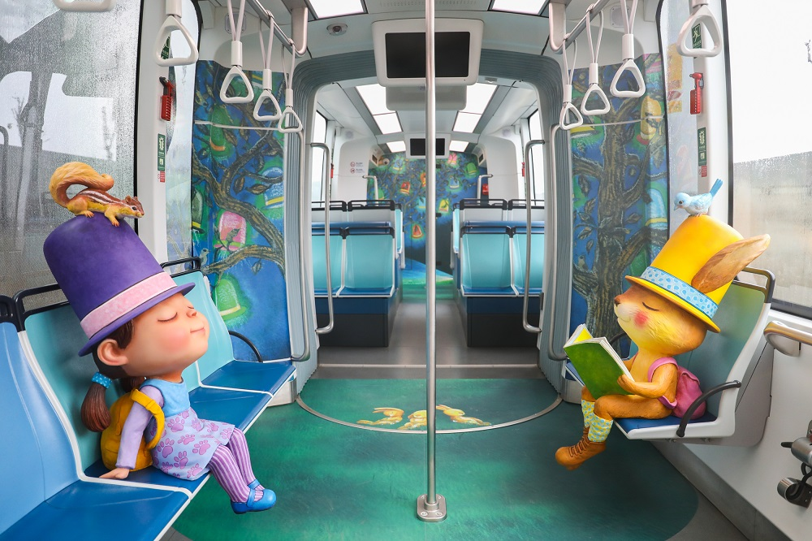
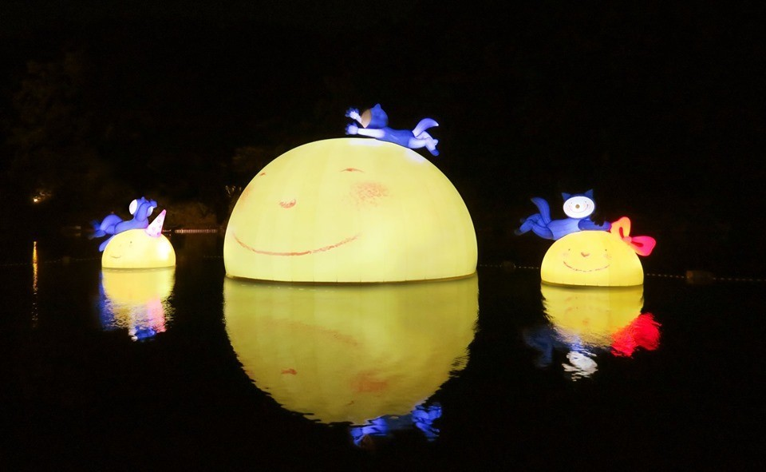
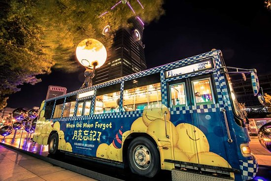

大玩AR遊淡水
淡海輕軌化身移動幾米童話世界
淡海輕軌自開通以來，即運用公共藝術的概念，邀請國際知名繪本作家幾米以淡水在地風光，量身打造全新作品《閉上眼睛一下下》，使淡海輕軌成為全台唯一的藝術輕軌。此次為慶祝通車一周年，淡海輕軌再度升級，特別推出三款幾米主題列車，「奇幻森林」、「動物樂園」，以及「漂浮城市」，讓整條綠山線變成幾米的移動繪本！

月亮從湖裡探頭
幾米《月亮忘記了》現身碧潭
應景中秋佳節，新店碧潭也成了最新的「賞月」區。原來是幾米《月亮忘記了》化身地景，將繪本裡的經典角色搬進碧潭，讓互相依偎的 3 顆月亮與小男孩陪伴大家過中秋。
結合裝置藝術和夜間燈光照明，讓《月亮忘記了》在白天與夜晚呈現不同面貌。白天是與湖光水色相襯的童話氛圍，到了夜裡，湖水映照出漂在水上搖曳的月亮倒影，療癒氛圍十足。若是白天前往，可先造訪臨近的碧潭吊橋、美山步道，再到碧潭欣賞裝置藝術。

幾米月亮公車
搭上通往奇幻未來的專車
台北幾米月亮公車超級可愛，就在台北信義區101大樓斜對面，可以和附近的四四南村人氣景點一塊攻略喔。
以幾米繪本《月亮忘記了》故事為主題，和信義房屋合作的免費裝置藝術，不論是白天或晚上拍夜景都超吸睛。
波比尤其愛月亮公車裡的「鏡子反射地板」，拍起來效果非常棒，值得順遊的台北景點，親子造訪更是合適。